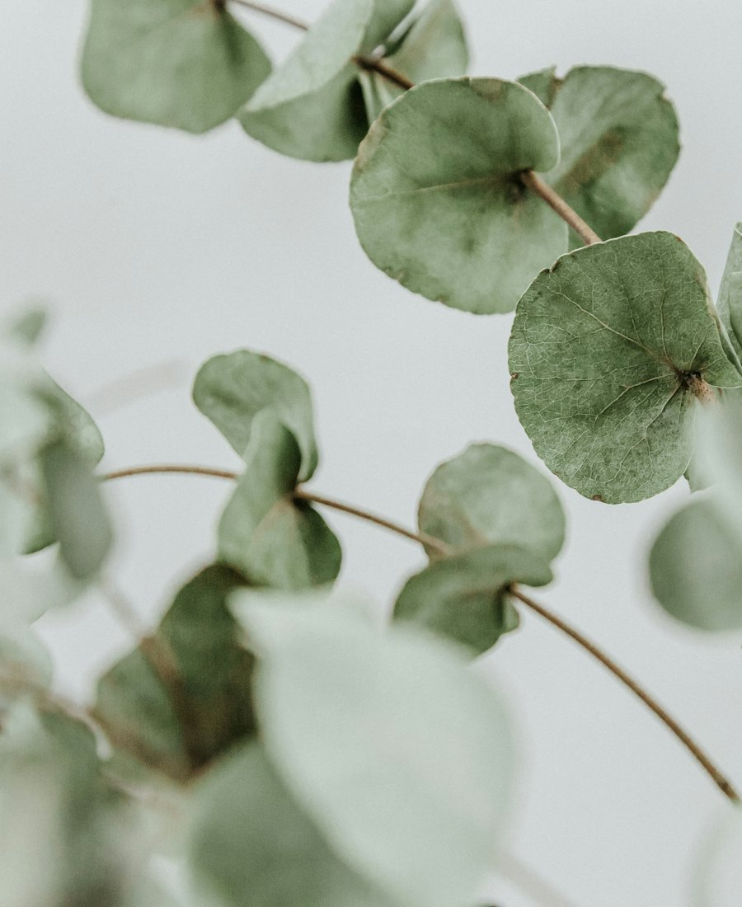

La sophrologie et moi.
Ce qu'est la sophrologie, à qui elle s'adresse, et qui je suis. Une page pour faire connaissance avant de se rencontrer.

Qu'est-ce que la sophrologie ?
Une méthode douce qui associe respiration, détente musculaire et visualisation positive. Elle aide à mieux vivre ce que l'on traverse, en s'appuyant sur ses propres ressources.
Pour qui ?
Adultes, adolescents, femmes enceintes, étudiants, sportifs : toute personne qui souhaite apaiser son stress, mieux dormir, se préparer à un événement ou traverser un changement.
Ce que ce n'est pas
La sophrologie ne remplace ni un médecin ni un traitement. Elle les accompagne, en complément.
Qui je suis.
Ici, votre histoire en quelques lignes, reprise de votre maquette : ce qui vous a menée à la sophrologie, votre formation, ce que vos patients trouvent auprès de vous.
Certification en sophrologie (école, année)
Cabinet à Marseille et séances en visio
Stress, sommeil, préparation aux examens

« Chaque séance vous laisse un outil simple, que vous pouvez refaire seul, chez vous, dès le lendemain. »